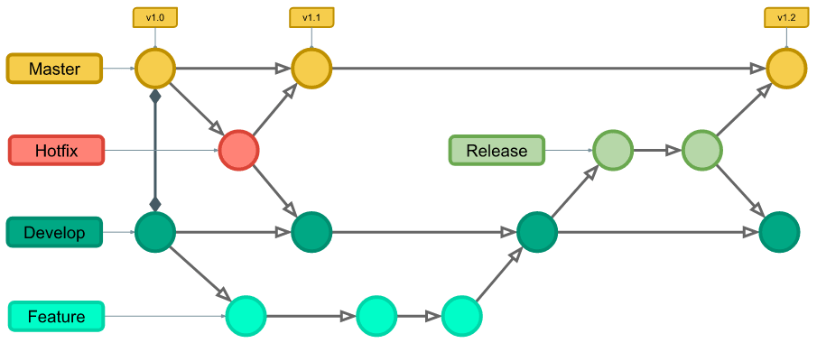

Plano de Gerência e Configuração de Software
Este documento tem como objetivo apresentar as ferramentas, políticas e regras adotadas pelo projeto RISO para auxiliar quem deseja contribuir.
Ferramentas
| Ferramenta | Finalidade |
|---|---|
| GitHub | Hospedagem e versionamento de código |
| GitHub Pages | Hospedagem de página web para repositório GitHub |
Política de Issues
Caso encontre um bug ou tenha alguma sugestão de melhoria para o software, é possível criar uma issue seguindo os passos abaixo:
Escolha o tipo de issue a ser criado (História de Usuário, documentação, task ou correção de bug) Escreva um título sucinto para a issue e preencha a descrição da issue seguindo os passos e as orientações do template.
Preencha informações adicionais caso possua (executores, épico, marco, história do usuário etc) Tanto o título como a descrição da issue devem estar escritos em português e seguir suas regras de sintaxe e semântica.
Política de Branches
Repositórios de Código
Para uma mudança chegar a branch master (branch estável) os passos abaixo são seguidos:
Toda nova branch deve ser feita a partir da Develop.
Ao resolver a issue proposta a nova branch deve ser merjada e comparada em relação à develop.
Caso o PR seja aprovado pela equipe, a nova branch será deletada e seu conteúdo integrado à develop.
Apenas quando a ramificação develop apresentar instabilidade, uma nova ramificação chama release deverá ser criada baseada na develop e merjada na main.
Repositório de Documentação
Para uma mudança chegar a branch DOCS-git_pages (branch estável) os passos abaixo são seguidos:
Toda nova branch deve ser feita a partir da DOCS-git_pages.
Ao resolver a issue proposta, a nova branch deve ser mergeada e comparada em relação à DOCS-git_pages.
Caso o PR seja aprovado pela equipe, a nova branch será deletada e seu conteúdo integrado a DOCS-git_pages.
Regras de Nomenclatura
Toda nova branch criada no repositório RISO deve se propor a resolver uma issue específica, o nome da branch deve seguir as regras da políticas do Git Flow:

Main/Master:
Principal branch, aqui é onde temos todo o código de produção. Todas as novas funcionalidades que estão sendo desenvolvidas, em algum momento, serão mescladas ou associadas à main. As formas de interagir com essa branch são através de uma Hotfix ou de uma nova Release.
Develop:
É a branch onde fica o código do próximo deploy. Ela serve como uma linha do tempo com os últimos desenvolvimentos, isso significa que ela possui funcionalidades que ainda não foram publicadas e que posteriormente vão ser associadas com a branch Master.
Feature:
São branches utilizadas para o desenvolvimento de funcionalidades específicas. As branchs nessa categoria devem ter o prefixo "feature/", tal como no exemplo abaixo:
feature/nome-da-feature
É importante saber que essas features branches são criadas sempre a partir da branch Develop. Portanto, quando finalizada, elas são removidas após realizar o merge com a Branch Develop. Se houver dez funcionalidades a serem desenvolvidas, então deverá ser criada dez branches independentes.
É importante salientar que as branches de features não podem ter interação com a branch /main, apenas com a branch develop.
Hotfix:
É uma branch criada a partir da master para realizar correções imediatas encontradas no sistema em produção. Quando concluída, ela é excluída após realizar o merge com as branches Main e Develop.
É necessário uma branch de hotfix para cada hotfix que precisar ser implementada!
A grande diferença entre Feature Branches e Branches de Hotfix é que os Hotfix são criados a partir da Branch Master e quando os finalizamos, eles são mesclados tanto na Branch Master quanto na branch de desenvolvimento. Isso ocorre porque o bug está em ambos os ambientes.
Além disso, quando fechar um Hotfix Branch, é necessário criar uma tag com a nova versão do projeto.
O nomeclatura para branchs de hotfix segue o padrão com o prefixo "hotfix/" antes do nome da correção:
hotfix/nome-do-hotfix
Release:
Uma vez que uma etapa de desenvolvimento esteja concluída, é normal que em nossa Branch Develop todas as features e Hotfix estejam mescladas. Portanto, para as funcionalidades irem à Branch Main, é necessário criar uma Branch de Release.
A Branch Release serve como ponte para fazer o merge da Develop para a Master. Ela funciona como ambiente de homologação e é removida após realizar os testes do merge com a Master. Caso seja encontrado algum bug e haja alguma alteração, ela também deve ser sincronizada com a Develop. A regra de nomeclatura segue o mesmo padrão dos anteriores:
release/nome-da-release
Política de Commits
Os commits devem ser atômicos (uma contribuição pequena para resolver um problema específico). A mensagem do commit deve relatar o que foi feito de maneira sucinta e direta, começar com um verbo e com a primeira letra maiúscula. Além disso, contribuições feitas por mais de uma pessoa devem conter o comando "Co-authored-by" para identificar todos os autores envolvidos.
Exemplo de contribuição feita por um autor:
git commit -m "feat: Adicionando nova funcionalidade"
Exemplo de contribuição feita por mais de um autor:
git commit -m "feat: Adicionando uma carta vermelha
Co-authored-by: Pessoa <EmailGit@email.com>"
Todos os commits devem seguir o padrão de nomeclatura do protocolo "Conventional Commits" para manter boas práticas de escrita e facilitar o entendimento do versionamento do software aos outros programadores colaboradores do projeto. Os principais prefixos são:
feat- Commits do tipo feat indicam que seu trecho de código está incluindo um novo recurso (se relaciona com o MINOR do versionamento semântico).
fix - Commits do tipo fix indicam que seu trecho de código commitado está solucionando um problema (bug fix), (se relaciona com o PATCH do versionamento semântico).
docs - Commits do tipo docs indicam que houveram mudanças na documentação, como por exemplo no Readme do seu repositório. (Não inclui alterações em código).
test - Commits do tipo test são utilizados quando são realizadas alterações em testes, seja criando, alterando ou excluindo testes unitários. (Não inclui alterações em código)
build - Commits do tipo build são utilizados quando são realizadas modificações em arquivos de build e dependências.
perf - Commits do tipo perf servem para identificar quaisquer alterações de código que estejam relacionadas a performance.
style - Commits do tipo style indicam que houveram alterações referentes a formatações de código, semicolons, trailing spaces, lint... (Não inclui alterações em código).
refactor - Commits do tipo refactor referem-se a mudanças devido a refatorações que não alterem sua funcionalidade, como por exemplo, uma alteração no formato como é processada determinada parte da tela, mas que manteve a mesma funcionalidade, ou melhorias de performance devido a um code review.
chore - Commits do tipo chore indicam atualizações de tarefas de build, configurações de administrador, pacotes... como por exemplo adicionar um pacote no gitignore. (Não inclui alterações em código)
ci - Commits do tipo ci indicam mudanças relacionadas a integração contínua (continuous integration).
raw - Commits to tipo raw indicam mudanças relacionadas a arquivos de configurações, dados, features, parametros.
cleanup - Commits do tipo cleanup são utilizados para remover código comentado, trechos desnecessários ou qualquer outra forma de limpeza do código-fonte, visando aprimorar sua legibilidade e manutenibilidade.
remove - Commits do tipo remove indicam a exclusão de arquivos, diretórios ou funcionalidades obsoletas ou não utilizadas, reduzindo o tamanho e a complexidade do projeto e mantendo-o mais organizado.
Para respeitar as regras definidas de commits, pedimos atenção aos pontos abaixo:
- A mensagem de commit DEVE ser prefixado com um tipo, que consiste em um substantivo, feat, fix, etc., seguido por um escopo OPCIONAL, símbolo OPCIONAL !, e OBRIGATÓRIO terminar com dois-pontos e um espaço.
- O tipo feat DEVE ser usado quando um commit adiciona um novo recurso ao seu aplicativo ou biblioteca.
- O tipo fix DEVE ser usado quando um commit representa a correção de um problema em seu aplicativo ou biblioteca.
- Um escopo PODE ser fornecido após um tipo. Um escopo DEVE consistir em um substantivo que descreve uma seção da base de código entre parênteses, por exemplo, fix(parser): .
- Uma descrição DEVE existir depois do espaço após o prefixo tipo/escopo. A descrição é um breve resumo das alterações de código, por exemplo, fix: problema na interpretação do array quando uma string tem vários espaços.
- Um corpo de mensagem de commit mais longo PODE ser fornecido após a descrição curta, fornecendo informações contextuais adicionais sobre as alterações no código. O corpo DEVE começar depois de uma linha em branco após a descrição.
- Um corpo de mensagem de commit é livre e PODE consistir em infinitos parágrafos separados por uma nova linha.
Política de Pull Request
Para realizar um Pull Request (PR) para o repositório é necessário seguir os passos abaixo.
Ao resolver uma issue, suba suas contribuições e crie um Pull Request Escreva um título sucinto para o PR, Preencha a descrição do PR seguindo os passos e as orientações do template que será mostrado, Ligue o PR com a issue que ele resolve, Preencha informações adicionais caso possua (executores, revisores, etc)
Política de Aprovação
Para um Pull Request ser aprovado nos repositórios de código, a contribuição feita deve:
- Resolver apenas a issue específica ao qual se habilita a tratar;
- Respeitar todos os critérios de aceitação definidos na issue;
- Estar descrita em português;
- Possuir cobertura de testes;
- Ser aprovada na integração contínua e nas ferramentas que ela executa;
- Conter lógica eficaz para preservar a performance do sistema;
- Conter boas práticas de programação para preservar a qualidade do código;
- Não adicionar nenhum comportamento inesperado.
Para um Pull Request ser aprovado no repositório de documentação, a contribuição feita deve:
- Ser relevante para o projeto;
- Resolver apenas a issue específica ao qual se habilita a tratar;
- Respeitar todos os critérios de aceitação definidos na issue;
- Estar na língua portuguesa e seguir as normas desta;
- Estar na pasta e formato adequados;
- Ser aprovada na integração contínua e nas ferramentas que ela executa.
Política de Documentação
Para contribuir com a documentação do projeto as regras definidas de commit, issue e PR também se aplicam, além destas pedimos atenção aos pontos abaixo:
- Todo documento deverá possuir histórico de versão;
- Caso o documento seja extenso e possua múltiplos autores um histórico de versão deve ser inserido ao final dele, respeitando as seguintes regras: o versionamento da documentação deve seguir um padrão X.Z, onde X e Z são numerais inteiros não negativos que crescem em ordem crescente.
Ao fazer grandes incrementos a variável X cresce (1.0, 2.0, 3.0) e ao fazer pequenos incrementos a variável Z cresce (1.1, 1.2, 1.3), ambas variáveis começam em zero e crescem de um em um. Ao subir a versão de X o valor de Z volta pra zero (1.4 -> 2.0). O documento só entra na versão 1.0 se naquele momento ele estiver teoricamente finalizado.
Histórico de Versão:
| Data | Versão | Descrição | Autor | Revisores |
|---|---|---|---|---|
| 31/07/24 | 1.0 | Criação do documento | Daniel Rodrigues | Marco Tulio |